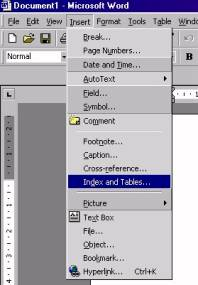

How to insert a content page into your document
MS-Word 97-2003 & MS-Word 2007
If you use a word processing application to write your
assignment
then a content page can easily be inserted into your document.
When you insert the Table of Contents make sure you place the cursor at th top of your document.
Example MS-Word 97-2003
What you have to do is the following:
For each heading and subheading in your assignment you need to allocate a style (H1,H2 etc).
You do this by clicking on the arrow next to Normal in the Formatting Bar. Then a submenu appears from which you can select
an appropriate style for your heading. (see opposite figure)

When you have allocated a style for all headings in your document
then a contents page can easily be inserted.
However, before you insert a contents page make
sure your cursor is at the beginning of your document. (push and
hold Ctrl-key and then press Home-key).
Now click on Insert. Then, a submenu
pops up as shown opposite.
Select Index and Tables and another
submenu pops up as shown below. |
Click on the Table of Contents tab and select a contents page layout
of your choice.
(If you want you can modify Tab leader, Formats and
Show level (number of headings)).
Click OK and whoop the contents page is done for you.
Go To Top |
Example MS-Word 2007
Very similar to MS-Word 97-2003. Style Headings are shown on the right side of the Home ribbon (see figure below)
|
| For each heading and subheading in your assignment you need to allocate a style (Heading1, Heading 2, Heading 3 etc).
I f you are not satisfied the the default style then you can modify the Heading style quite easily by right mouse-click and click Modify in the po-up window. Another po-up window appears where you can the modify the fromat of the heading type.
As soon as all types of headings are allocated
in the document then click on the References ribbon.
Then Click Table of Contents icon (far left side). In the po-up window click Insert Table of Conytents and select Insert Table of Contents.
In the po-up window select the format of the Table of Contents.
There are seven (7) different formats from the template:
1 Classis
2 Distinctive
3 Fancy
4 Modern
5 Formal
6 Simplex
Show levels ► selection of three (3) different Tab leaders
Go To Top
back to Handy Information |
|